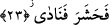
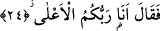

inandığından değil, sırf inad ve isyan olsun diye onlara karşı gelme hususunda “olanca
çabasını harcayarak yüz çevirdi.” Yani bâtılı illet göstererek itâatten yüz çevirdi.
Âyetin başındaki “sümme/sonra” edatının mânâsı, zaman açısından öncelik ve
sonralıktır. Çünkü Hz. Mûsâ’nın durumunu iptal etmek için harekete geçmek bir zaman
aralığı gerektirir.
Yukarda “edbera” fiiline “itâatten yüz çevirdi” anlamı verildi. Buna, “bulunduğu
meclisten yüz çevirdi” mânâsını vermek de mümkündür. Rağıb’ın ifâdesine göre
“edbera” fiili “yüz çevirdi, sırtını dönüp gitti” demektir.
Görmüş olduğu mûcizelerin karşı gelinmesi mümkün olan mûcizeler olduğuna
inancından değil de inadından ve isyanından dolayı Fir’avn’un bunlara karşı geldiği
şeklindeki sebeb bildirme, onun bâtıla iyice saplandığını göstermektedir.
Keşşaf’ta ifâde edildiğine göre Fir’avn, asânın yılana dönüştüğünü görünce
korkusundan sırtını dönmüş ve koşa koşa oradan uzaklaşmıştır.
Hasan’a göre Fir’avn akılsız bir adamdı.
23. Derhal (adamlarını) topladı ve (onlara) bağırdı.
Yani sihirbazlarını topladı. Onun, sihirbazlarını topladığını Şuarâ sûresinde aynı olayı
konu alan “Fir’avn da şehirlere toplayıcılar gönderdi.” (Şuarâ 26/53) âyetinden
anlıyoruz. Bu konuda bir başka âyet de şudur: “Bunun üzerine Fir’avn dönüp gitti.
Hilesini (sihirbazlarını) topladı sonra geri geldi.” (Taha 20/60) Âyetteki “hilesini
topladı” ifâdesi ile kasdedilen, sihirbazları ve onların aletlerini bir araya getirerek
hilesini tertipledi demektir. Bununla birlikte âyetten, “Fir’avn bütün insanları topladı”
anlamı da anlaşılabilir. “Ve (onlara)” onların toplandıkları yerde bizzat kendisi veya
bir tellal vâsıtasıyla “bağırdı”.
24. “Ben sizin en yüce Rabbinizim!” dedi.
“Ben sizin” üzerinde başka birisi olmayan “en yüce Rabbinizim” dedi. Bu sözü
kendisi saltanat ve hükümet makamında bulunduğu için söyledi. Bir başka ifâdeyle
onlara şöyle demiş oldu: Ben sizin işlerinizi idare edenlerin en yücesiyim. Buradaki
“el-a’lâ/en yüce” şeklindeki ism-i tafdil kipi, Fir’avn’un, mertebe bakımından
kendisinden daha aşağıda bulunan melikler ve emirlerin fevkinde olduğunu ifâde
etmektedir.
Kâşifî’ye göre Firavun şöyle dedi: Putlar benim sûretim üzeredirler ve onların hepsi